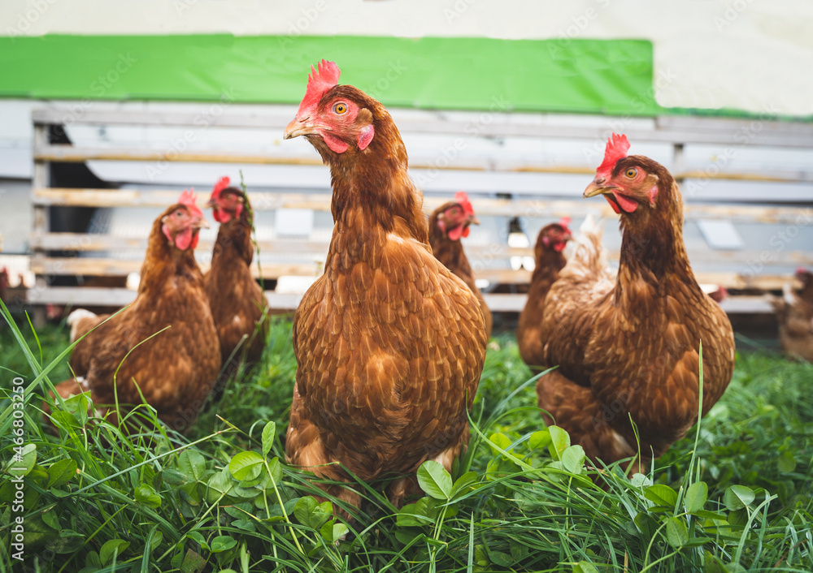
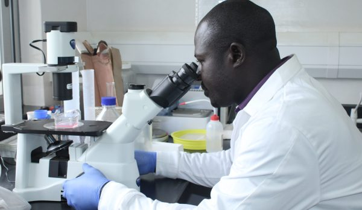
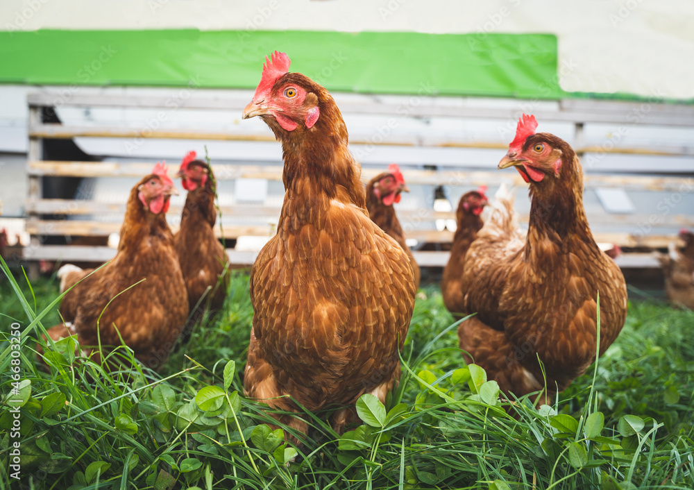
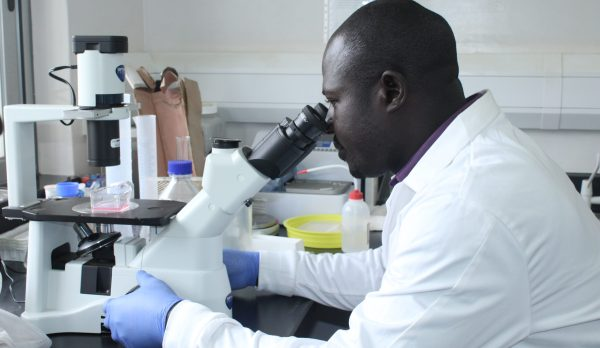
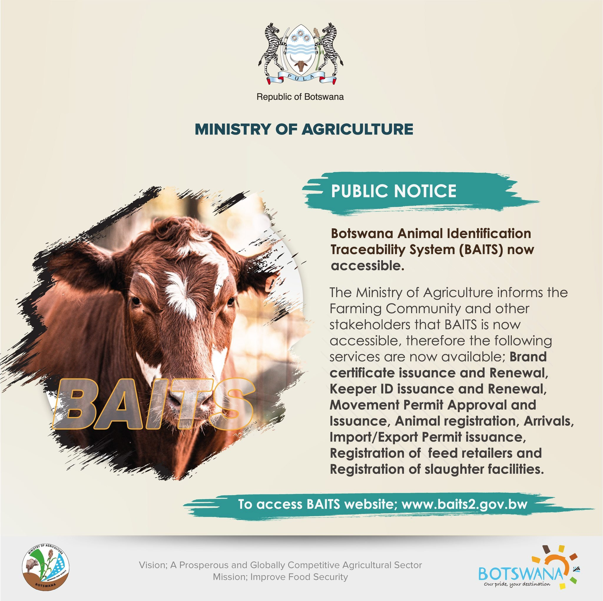
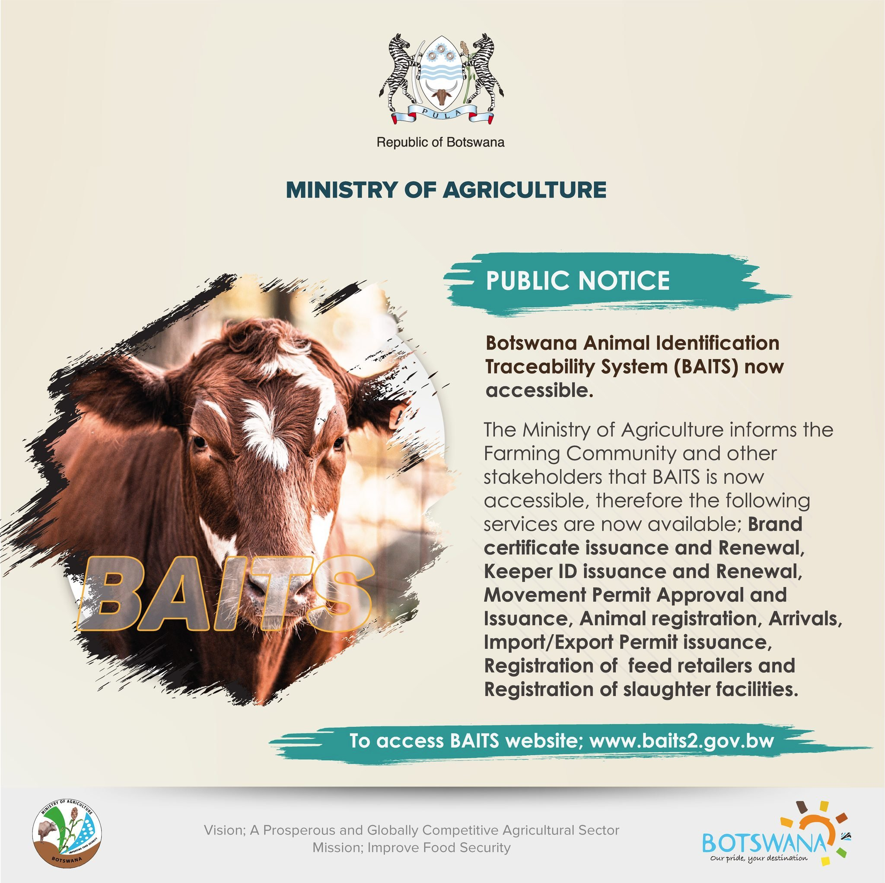
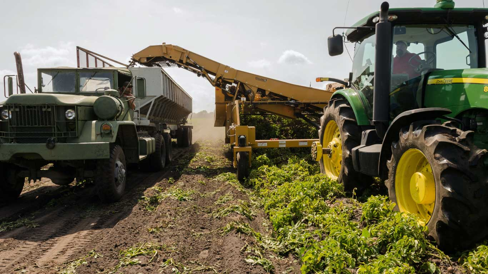
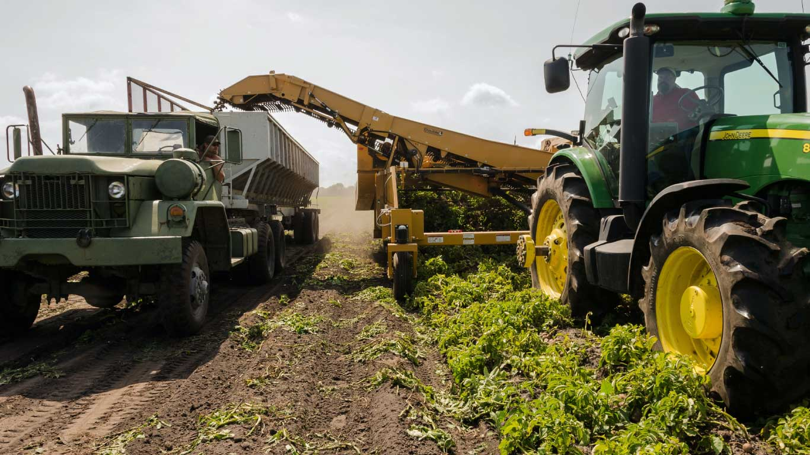

Agricultural Resources

Agricultural Resources Conservation Act
The Agricultural Resources Conservation Act of Botswana was passed in 1974 to establish the Agricultural Resources Board (ARB) and define its powers and functions. The act also provides for conservation committees and subordinate conservation committees, and defines agricultural resources as: soils, waters, plant life and vegetation, animal life and fauna, and vegetable products of the soil. .
Learn MoreNational Plant Genetic Resources Unit (NPGRC)

The National Plant Genetic Resources Unit (NPGRC) in Botswana collects and preserves seeds of cultivated crops, their wild relatives, and other useful wild plant species. The conserved plant genetic resources can be used to improve the quality and productivity of crops. The NPGRC stores gene bank accessions in chest freezers at -18°C for long-term conservation and also has a walk-in cold room for short-term storage.
Learn MoreNational Agricultural Research and Development Institute (NARDI)
.png) 



A Research Technology Organisation (RTO) under the Ministry of Agriculture (MoA) that was formed in 2015 to merge the operations of the Department of Agricultural Research (DAR), National Veterinary Laboratory (NVL), and National Food Technology Research Centre (NFTRC).By focusing on areas like crop development, animal health, and sustainable practices, NARDI helps improve agricultural yields, commercialization, and food security for the nation, all while promoting knowledge transfer and collaboration across the agricultural sector.
Learn More
Ministry of Agricultural Development and Food Security
.jpg)
.jpg) 

Botswana's Ministry of Agricultural Development and Food Security captains the country's agricultural sector, charting a course towards food security. They achieve this by driving increased local production, reducing reliance on imports and strengthening the national food supply. The Ministry also fosters diversification of crops and livestock, ensuring resilience against fluctuations in specific products. To empower farmers and create a more profitable agricultural industry, they promote value addition through initiatives that support processing and marketing of agricultural products. Recognizing the importance of long-term sustainability, the Ministry champions sustainable practices that conserve land and protect its productivity. Ultimately, their efforts aim to empower farmers, eradicate poverty through agriculture-based job creation and community development programs, and ensure a flourishing agricultural industry that contributes significantly to Botswana's economy.
Learn MoreLocal Enterprise Authority
.png)
 

The Local Enterprise Authority (LEA) has formulated new strategies aimed at enhancing food security and employment rate which have dogged the country for quite some time now. LEA is also mobilising a batch of prospective farmers to impart new technologies earned from off-shore to fill the gap.
Learn More
Citizen Entrepreneurial Development Agency
CEDA provides subsidized loans for various sub sectors within Agribusiness to enable citizen participation in sustainable agricultural activities. The Agribusiness Sector has two offerings; Agribusiness Mainline Funding and Young Farmers Fund.
Learn More